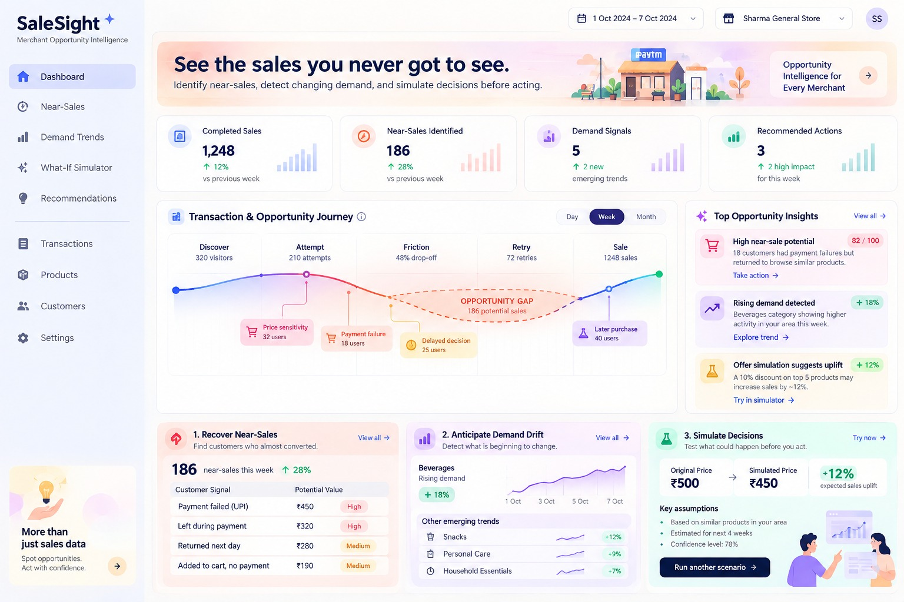
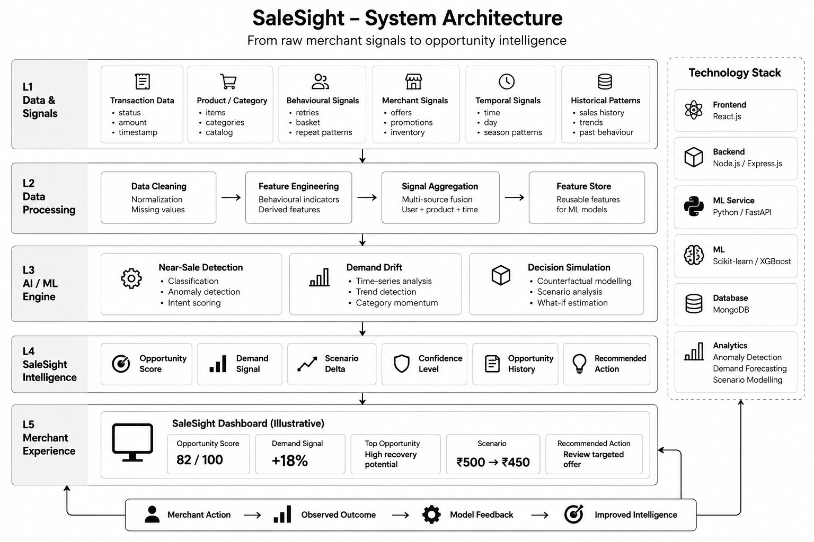

01
A customer almost bought
A payment fails, a customer retries, or engagement stops before completion.
Incomplete conversion signal
→
SaleSight is a proposed merchant opportunity intelligence system designed to uncover incomplete conversions, detect emerging demand and help merchants evaluate decisions before acting.
Traditional merchant analytics explain completed sales. SaleSight focuses on the signals surrounding them — where conversion may have broken, where demand may be changing, and where a different decision could produce a different outcome.
A payment fails, a customer retries, or engagement stops before completion.
A category or product starts behaving differently before the change becomes obvious in ordinary reports.
A merchant considers changing price, discount, promotion or inventory without knowing the possible outcome.
The system converts transaction and behavioural signals into merchant-oriented intelligence rather than another sales dashboard.
Surfaces potentially recoverable opportunities from failed attempts, retries, transaction friction and unusual conversion gaps.
Compares recent and historical patterns to identify emerging product or category movement before it becomes obvious.
Evaluates hypothetical pricing, discount, offer, bundle or inventory decisions before execution.
Select a friction point to see how multiple signals can combine into an opportunity indicator.
Additional behavioural evidence is required.
Illustrative simulation using sample merchant signals. It does not represent live Paytm transaction data.
Near-sale detection looks for patterns associated with incomplete conversion rather than treating every failed payment as a lost sale.
Payment failures and retries
Product engagement and basket behaviour
Repeat customer patterns
Historical conversion behaviour
SaleSight compares recent activity with historical behaviour to identify unusual movement across relevant categories.
Demand values shown above are illustrative and are not actual forecasts or live market measurements.
Test a hypothetical merchant decision before execution. Adjust the scenario and compare its illustrative outcome against the current baseline.
Estimated sales movement under this scenario.
The figures above represent an illustrative counterfactual simulation. Actual outcomes depend on customer behaviour, competition, inventory, timing and other factors.
A merchant can evaluate multiple scenarios and retain control over the final business decision.
Instead of exposing machine-learning complexity, SaleSight translates intelligence into understandable opportunity signals, confidence indicators and recommended actions.

Explore how the proposed interface translates opportunity intelligence into merchant-facing information.
How strong is the detected signal?
What appears to be changing?
What could change under a decision?
What could the merchant consider next?
Dashboard shown is an illustrative proposed interface and does not represent a live Paytm merchant dashboard.
A cluster of incomplete payment attempts is detected.
Other behavioural signals strengthen the opportunity.
The merchant evaluates a possible response.
The resulting outcome becomes another signal.
A merchant can review previously detected opportunities, decisions and observed outcomes to understand how their opportunity landscape changes over time.
A near-sale signal associated with payment friction and repeat customer behaviour.
The proposed system connects detected opportunities, merchant actions and observed outcomes into a feedback loop.
SaleSight separates data signals, processing, intelligence generation and merchant experience into distinct layers.

The proposed architecture separates the merchant-facing application layer from analytical and machine-learning services.
Merchant-facing experience and interactive intelligence views.
Application APIs, business logic and service orchestration.
Dedicated service boundary for analytical workloads.
Detection, scoring and scenario modelling components.
Application and intelligence data storage.
Near-sale detection, demand analysis and scenario modelling.
SaleSight is designed as a decision-support layer. The intelligence should help merchants understand a signal, evaluate uncertainty and decide what to do.
Show the signals contributing to an opportunity rather than presenting an unexplained score.
Pair estimates with confidence and context instead of presenting predictions as facts.
Recommendations support merchant judgement; they do not autonomously execute business decisions.
Intelligence should connect to a possible next step, not stop at another analytical chart.
The following represent potential monetisation routes for the proposed concept rather than existing commercial operations.
Advanced opportunity intelligence for growing and high-frequency merchants.
SubscriptionIntelligence around promotions, campaigns and growth-oriented merchant actions.
Usage-basedOpportunity scores, demand signals and scenario intelligence exposed to merchant platforms.
Platform / EnterpriseHelp them understand what they missed, what is changing, and what could happen next.